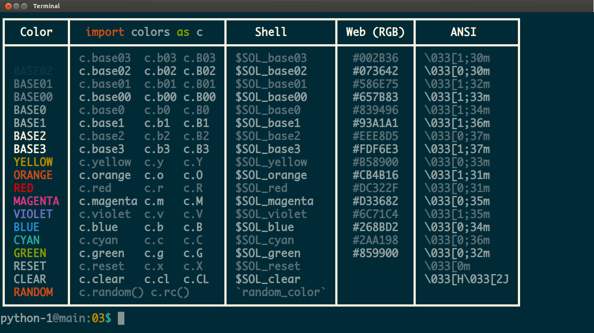

Most classes would stop right here and call this "hello world"
complete but let's add some color and learn about import and
operators. Somehow programming is more fun with colors and these
days adding color to terminal programs is pretty easy. Most terminals
are still limited to 16 colors so we will use the Solarized Dark
Theme, our favorite here at
SkilStak. What are the colors you ask? Type colors on the command-line
to see:

To use these fancy colors we have to import them. Think of this as
checking out a code book from the library that has extra stuff in it we want
to use that isn't included. The as c part tells Python we don't want to
type colors every time we use anything from the colors module:
import colors as c
Now that it's imported we can change our code to use them:
print(c.yellow + "Hello world" + c.reset)
We put the c. in front to tell Python to use the yellow from that
module instead of another yellow we may have used in the code elsewhere.
If you are a teacher or an ambitious student who does not
have these colors set up in your terminal you can look at
tools for some help.
The colors can be joined to our string with the join + operator. An
operator is a symbol that does something to the things on either side
of it called operands. You can think of an old-school telephone
operator who made connections between folks.

Or if you prefer the Matrix version, think of how Tank the operator got a call every time Neo and the gang wanted in or out of the Matrix.

We'll join the long c.yellow for now and short for later to save on
space and typing. When in doubt, use whatever one reads the best.
The c.reset is a good habit to get into. It keeps colors from bleeding
into text that follows.
If you forget the colors you can type colors from the Linux command-line
to see them again.